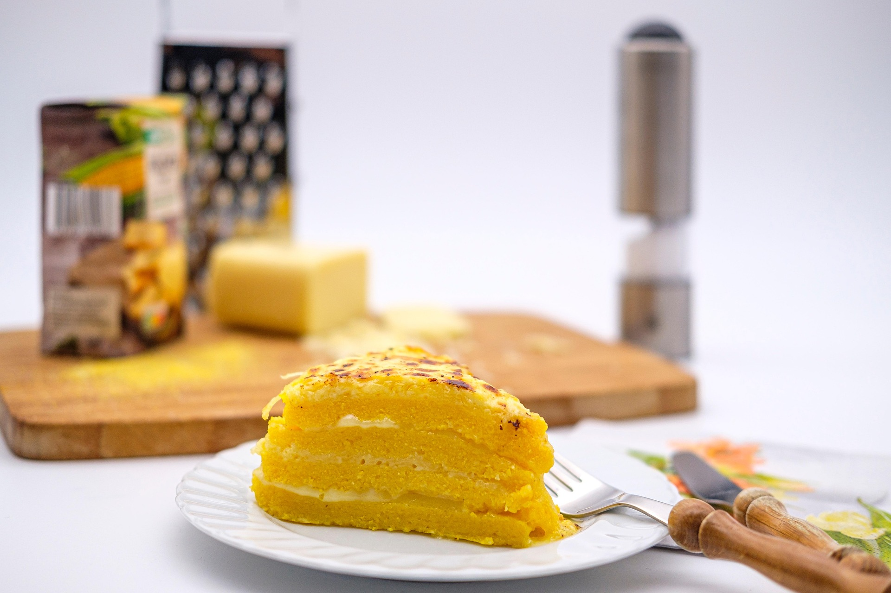

Home
Arepas

Arepas are a type of food made from ground maize dough or cooked flour,
originating from the northern regions of South America. They are a staple
in Colombian and Venezuelan cuisine and can be grilled, baked, fried, boiled, or steamed.
Ingredients
-
Arepa Dough:
Made from pre-cooked cornmeal (masarepa), water, and salt.
-
Filling Options:
Common fillings include cheese, meats, avocado, or beans.
-
Seasoning:
Salt and pepper to taste.
-
Oil:
For frying or grilling the arepas.
-
Optional Toppings:
Such as sour cream, salsa, or guacamole.
How to Make Arepas Step-By-Step
-
Prepare the Dough:
In a bowl, mix the pre-cooked cornmeal with water and salt until a dough forms.
Let it rest for about 5 minutes.
-
Shape the Arepas:
Divide the dough into equal portions and shape them into discs about 1/2 inch thick.
-
Cook the Arepas:
Heat a skillet or griddle over medium heat. Cook the arepas for about 5-7 minutes on each side,
or until they develop a golden crust.
-
Add Fillings:
Once cooked, slice the arepas open and fill them with your choice of cheese, meats, or vegetables.
-
Serve:
Enjoy your arepas warm with optional toppings like sour cream or salsa.